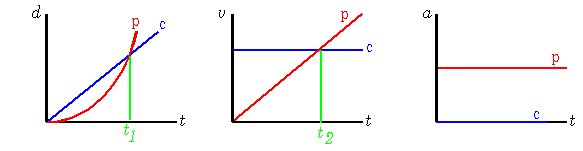

Car Chase
A car (c) with one headlight burned
out is traveling at a constant speed of 18 m/s and passes a stopped
police car (p). The car is pursued
immediately by the police cruiser, which has a constant acceleration
of magnitude 2.2 m/s2.
(a) How far does the police cruiser travel before catching the
other car?
(b) At what time will this occur? (Hint: Graphing may help to
visualize this problem.)
No. Certainly at some time the
velocities of the two cars will be instantaneously equal, but that is
not the time when the cars are at the same position. The time when
the velocities are equal is t2, but we want time
t1.

Try again.